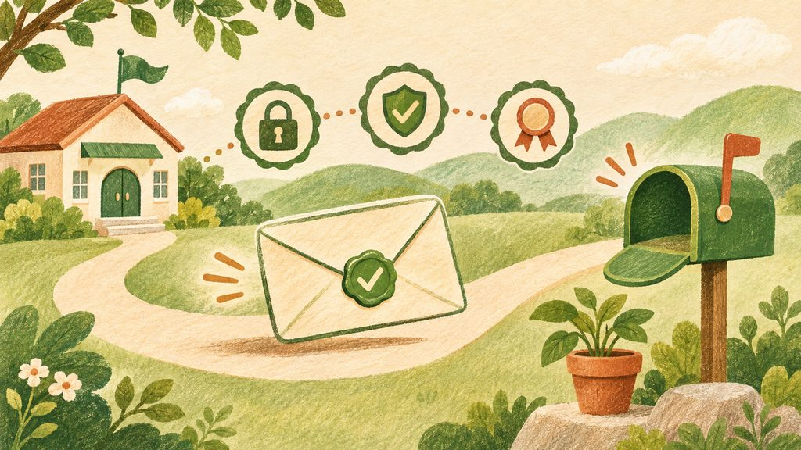
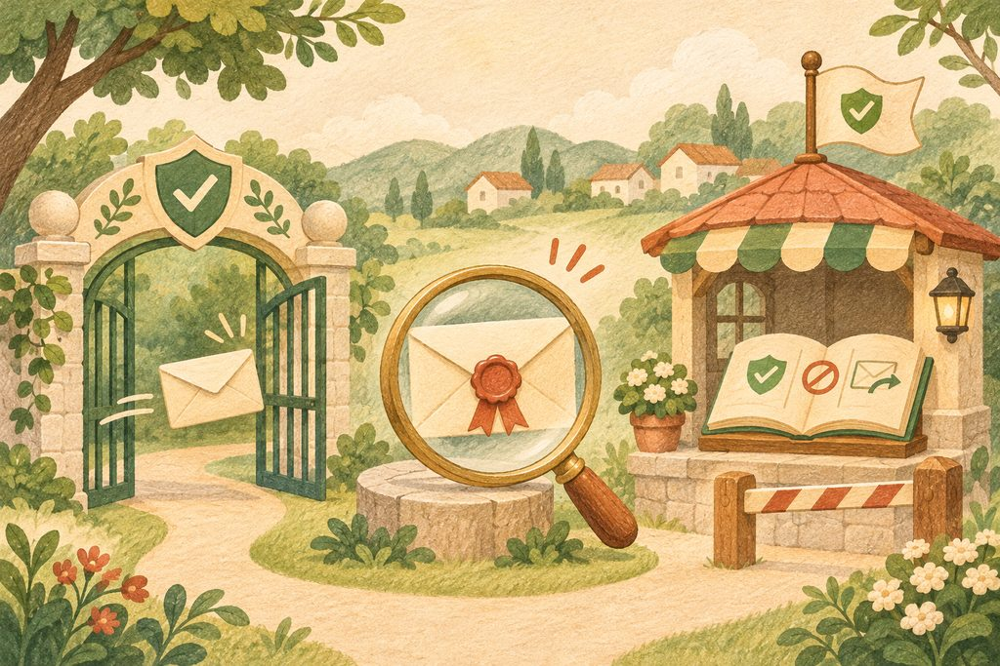

01
SPF정해진 문으로 나왔나요?
우리 도메인의 메일을 보낼 수 있는 서버를 등록합니다. 구글로만 보낸다면 “구글 서버에서 보내는 메일을 허용합니다”라고 적어 두는 셈입니다.
“메일 보냈는데 못 받으셨다고요?”
우리 기관 메일의 신뢰를 지켜 주는 세 가지 설정을
차근차근 알아보겠습니다.

내용을 잘 썼어도, 받는 서버가 발신자를 믿지 못하면 메일이 걸러질 수 있습니다.
사업 안내나 협조 공문을 기관 메일로 보낸 뒤 “메일이 안 왔어요”라는 답을 듣는 일이 있습니다. 강의에서는 특히 공공기관·공무원 메일로 보낼 때 이런 경험이 자주 나온다고 설명했습니다. 상대방이 놓친 것만은 아닙니다. 받는 쪽의 보안 검사에서 스팸함으로 분류되거나, 수신이 거부될 수도 있습니다.
“이 메일이 정말 그 기관에서 온 것인가요?”
수신 서버는 이 질문을 확인합니다. 주소에 기관 도메인이 적혀 있다는 사실만으로는 충분하지 않기 때문입니다. SPF·DKIM·DMARC는 이 확인을 돕는 이메일 인증 설정입니다. SNS의 인증 배지처럼 메일에 신뢰의 근거를 더해 준다고 생각하시면 쉽습니다.
담당 관리자가 도메인에 설정해 두면 직원이 메일을 보낼 때마다 따로 인증 버튼을 누를 필요는 없습니다. 이후 발송 서비스나 도메인 환경이 달라지면 관리자가 설정을 다시 점검합니다.
“정해진 문으로 나왔는지, 봉인이 온전한지, 문제가 있으면 어떻게 할지”를 정합니다.

우리 도메인의 메일을 보낼 수 있는 서버를 등록합니다. 구글로만 보낸다면 “구글 서버에서 보내는 메일을 허용합니다”라고 적어 두는 셈입니다.
발송 서버가 메일에 디지털 서명을 붙입니다. 받는 서버가 이를 검증해 서명한 도메인과, 서명으로 보호한 내용의 변조 여부를 확인합니다.
발신 주소의 도메인과 인증 결과를 연결해 확인합니다. 실패한 메일을 지켜볼지, 격리할지, 거부할지 수신 서버에 요청하는 정책입니다.
강의의 문과 봉인, 경비원 비유를 떠올려 주세요. SPF는 출발지, DKIM은 서명, DMARC는 발신 도메인 확인과 처리 규칙으로 기억하시면 됩니다. 경비원 비유에서 DMARC는 “검사 결과에 따라 어떻게 처리할지 적어 놓은 지침”에 해당합니다.
도메인은 메일 주소에서 @ 뒤에 오는 부분입니다. DNS는 그 도메인의 인터넷 주소록과 같습니다. TXT 레코드는 이 주소록에 적는 안내 문구라고 생각하시면 됩니다.
세 설정의 기본 작업은 DNS에 TXT 레코드를 등록하거나 수정하는 것입니다. DKIM은 여기에 더해 관리 콘솔에서 키를 생성하고 인증을 시작하는 과정이 필요합니다.
먼저 도메인의 DNS를 누가 관리하는지 확인해 주세요. 도메인을 구매한 서비스의 DNS 관리 화면에서 설정하는 경우가 많지만, 홈페이지 제작 업체가 별도로 관리할 수도 있습니다.
지금 아는 상황을 누르면 먼저 할 일을 안내해 드립니다.
구글 관리 콘솔과 실제 DNS 관리 화면에 접근할 수 있는지 확인합니다. 기존 레코드를 확인한 뒤 첫 단계부터 진행하세요.
구글 워크스페이스에서만 발송한다면 아래 값이 기본 예시입니다.
DNS 관리 화면에서 기존 TXT 레코드를 살펴봅니다. v=spf1로 시작하는 값이 없다면 새 TXT 레코드를 추가합니다. 이미 있다면 새 SPF 레코드를 하나 더 만들지 말고 기존 값에 필요한 발송 서버 정보를 합쳐 주세요. 같은 도메인 이름에는 SPF 레코드를 하나만 둡니다.
TXT@ 또는 빈칸입니다. DNS 서비스 안내를 따르세요.v=spf1 include:_spf.google.com ~allv=spf1 include:_spf.google.com ~all키 생성 → DNS 등록 → 인증 시작. 세 과정을 모두 마쳐야 합니다.
관리자는 구글 관리 콘솔에서 DKIM 키를 생성합니다. 표시되는 DNS 호스트 이름과 TXT 레코드 값 전체를 복사해 DNS에 넣고, 다시 관리 콘솔로 돌아와 ‘인증 시작’을 누릅니다. 키를 만들거나 DNS에 넣는 것만으로 끝내지 않는 것이 핵심입니다.
실제 설정이 바뀌지 않는 연습입니다. 버튼으로 다음 화면의 할 일을 확인하세요.
메일 설정 권한이 있는 관리자 계정으로 로그인합니다. 일반 직원 계정에 메뉴가 보이지 않으면 관리자에게 요청하세요.
전체 경로: 관리 콘솔 › 앱 › Google Workspace › Gmail › 이메일 인증
TXTgoogle._domainkey — 기본 선택기를 사용할 때의 예시입니다. 콘솔에 표시된 실제 이름을 사용하세요.v=DKIM1; k=rsa; p=… 형태이며, 여기의 말줄임표를 실제 값으로 입력하면 안 됩니다.DNS 저장 후 반영 시간이 필요할 수 있습니다. 관리 콘솔에서 인증을 시작할 때 아직 찾을 수 없다는 안내가 나오면, 레코드 이름과 값이 맞는지 확인하고 반영 후 다시 시도합니다. 마지막으로 새 테스트 메일을 보내 서명이 검증되는지 확인하세요.
정상 메일이 인증을 통과하는지 먼저 살펴본 뒤 처리 정책을 강화합니다.
SPF와 DKIM의 동작을 확인한 뒤, 이름이 _dmarc인 TXT 레코드를 추가합니다. 처음에는 지켜보기 정책인 p=none으로 시작하고, rua에 지정한 주소로 집계 보고서를 받습니다. 보고서에서 정상 발송 경로에 문제가 없는지 살펴본 후 격리, 거부로 점진적으로 바꿉니다.
TXT_dmarcv=DMARC1; p=none; rua=mailto:관리자주소버튼은 정책의 의미만 보여 줍니다. 실제 DNS 설정은 바뀌지 않습니다.
p=none은 DMARC 실패를 이유로 격리나 거부를 요청하지 않습니다. 보고서를 받아 정상 메일의 인증 상태를 살펴보는 출발점입니다. 다른 스팸 검사는 계속 적용됩니다.
예시 주소입니다. 실제 적용 시에는 수신 가능한 기관 도메인의 주소로 바꾸세요. 입력한 주소는 저장하거나 전송하지 않습니다.
v=DMARC1; p=none; rua=mailto:admin@example.orgv=DMARC1p=nonerua=mailto:홈페이지를 외부 업체가 제작하면서 DNS까지 관리하는 경우가 있습니다. 기관에 수정 권한이 없다면 업체에 SPF·DKIM·DMARC용 TXT 레코드 등록 또는 수정을 요청하세요. DNS에 실제 값을 넣는 일은 업체가, 구글 관리 콘솔에서 DKIM 키를 생성하고 인증을 시작하는 일은 기관의 권한 있는 관리자가 맡는 식으로 협력할 수 있습니다.
특히 DKIM은 다른 기관의 값을 가져오면 안 됩니다. 우리 도메인의 관리 콘솔에서 생성한 이름과 값을 전달합니다. SPF는 기존 레코드와 다른 발송 서비스도 검토해 달라고 요청하고, DMARC 보고서를 받을 실제 주소를 함께 알려 주세요.
대괄호 부분을 채운 뒤 복사해 사용하세요. 이 페이지에서 메일을 발송하지는 않습니다.
업체가 “등록했습니다”라고 답한 뒤에도 여기서 끝내지 마세요. 관리자가 콘솔로 돌아가 DKIM의 ‘인증 시작’을 누르고, 다음 절차로 실제 발송 결과를 확인합니다.
DNS 검사와 실제 메일 검사는 확인하는 대상이 다릅니다. 둘 다 해 보세요.
google입니다. 검사 경고가 있으면 항목별 안내를 확인하세요.PASS(통과)를 확인합니다.아래는 실제 메일과 연결되지 않은 연습 화면입니다. 더보기를 눌러 보세요.
안녕하세요. 메일이 잘 도착했는지 확인 부탁드립니다.
SPFPASS · 통과DKIMPASS · 통과DMARCPASS · 통과잘 찾으셨습니다! 이것은 통과한 결과의 예시입니다. 실제 메일에서도 결과와 인증 도메인을 확인하세요.
세 결과가 모두 통과하면 기본 인증이 동작하는지 확인하는 데 도움이 됩니다. DMARC는 SPF 또는 DKIM 중 통과한 인증의 도메인이 보낸사람 도메인과 일치하는지도 확인합니다. 한 통의 통과만으로 모든 발송 경로가 검증되는 것은 아니므로 소식지와 자동 알림도 각각 새 메일로 확인하세요.
강의에서 다룬 실무 상황을 질문과 답으로 정리했습니다. 궁금한 항목을 눌러 주세요.
p=none은 DMARC 실패를 이유로 격리나 거부를 요청하는 정책이 아닙니다. 우선 보고서를 살펴 정상 발송 경로를 점검하는 단계입니다. 관리자가 정상 메일의 인증과 도메인 일치를 확인한 뒤 격리·거부 정책으로 점차 강화합니다. 수신 서버는 자체 보안 정책도 적용합니다.헷갈려도 괜찮습니다. 답을 고른 뒤 해설을 확인하면 됩니다.
오늘 모두 설정하지 않아도 좋습니다. 누가 맡을지 확인하는 것이 첫걸음입니다.
첫 항목부터 하나씩 확인해 보세요.
메일 한 통의 신뢰도,
함께 확인하는 데서 시작됩니다.
강의 내용을 바탕으로 구성하고, 기능 설명은 구글 공식 도움말로 확인했습니다. 메뉴 표기는 계정과 화면에 따라 조금 다를 수 있습니다.
보내는 서버 등록 안내 ↗디지털 서명 설정 안내 ↗처리 정책과 보고서 안내 ↗메일 원본 확인 안내 ↗